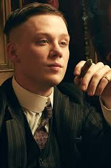
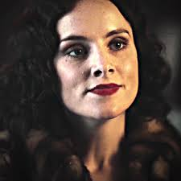
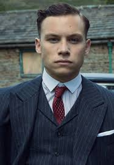

Rodzina i Sojusznicy

Thomas Shelby
Lider Peaky Blinders, wizjoner i strateg. Po I wojnie światowej wrócił z traumą, ale także z ogromną ambicją.
Zbudował imperium od nielegalnych zakładów do legalnych fabryk i polityki. Został posłem do parlamentu.
Jego największą bronią nie była przemoc, lecz inteligencja i chłodna kalkulacja.

Arthur Shelby
Najstarszy z braci Shelby. Brutalny, impulsywny, ale lojalny wobec rodziny.
Zmaga się z traumą wojenną i problemami psychicznymi.
Choć często działa pod wpływem emocji, bez niego gang nie miałby swojej siły militarnej.

Polly Gray
Ciotka Shelbych i księgowa imperium. To ona prowadziła interesy, gdy bracia byli na wojnie.
Silna, inteligentna i bezwzględna, gdy trzeba chronić rodzinę.
Była moralnym i finansowym filarem organizacji.

John Shelby
Młodszy brat Thomasa. Porywczy i odważny.
Wierny rodzinie i gotowy zginąć za jej interesy.
Jego śmierć była jednym z najbardziej wstrząsających momentów serialu.

Ada Shelby
Jedyna siostra w rodzinie. Inteligentna i niezależna.
Zaangażowana w ruchy polityczne i lewicowe idee.
Z czasem przejęła część obowiązków Thomasa.

Michael Gray
Syn Polly. Początkowo niewinny chłopak ze wsi.
Z czasem stał się ambitnym i niebezpiecznym graczem.
Jego konflikt z Thomasem doprowadził do rodzinnej wojny.